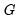
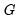

All of these estimators are special cases of sandwich estimators of the coefficient covariances. The name follows from the structure of the estimators in which different estimates of

are sandwiched between two instances of an outer moment matrix.
Estimates using this approach are typically referred to as White or
Huber-White or (for the d.f. corrected case)
White-Hinkley covariances and standard errors.
To select the White covariance estimator, specify the equation as before, then select the tab and select in the drop-down. You may, if desired, use the checkbox to remove the default , but in this example, we will use the default setting. (Note that the combo setting is not important in linear specifications).
Notice that EViews reports both the conventional residual-based F-statistic and associated probability and the robust Wald test statistic and
p-value for the hypothesis that all non-intercept coefficients are equal to zero.
Recall that the familiar residual F-statistic for testing the null hypothesis depends only on the coefficient point estimates, and not their standard error estimates, and is valid only under the maintained hypotheses of no heteroskedasticity or serial correlation. For ordinary least squares with conventionally estimated standard errors, this statistic is numerically identical to the Wald statistic. When robust standard errors are employed, the numerical equivalence between the two breaks down, so EViews reports both the non-robust conventional residual and the robust Wald
F-statistics.
EViews reports the robust F-statistic as the
Wald F-statistic in equation output, and the corresponding
p-value as
Prob(Wald F-statistic). In this example, both the non-robust
F-statistic and the robust Wald show that the non-intercept coefficients are jointly statistically significant.
The two familiar White covariance estimators described in “Basic HC Estimators” are two elements of a wider class of HC methods (Long and Ervin, 2000; Cribari-Neto and da Silva, 2011).
To illustrate the use of the alternative HC estimators, we continue with the Wooldridge example (“Example”) considered above. We specify the equation variables as before, then select the tab and click on the drop-down and select :
Note that the and items replicate the option from the original dropdown and are included in this list for completeness. If desired, change the method from the default , and if necessary, specify values for the parameters. For example, if you select User-specified, you will be prompted to provide the name of a series in the workfile containing the values of the weights

.
Continuing with our example, we use the dropdown to select the method, and retain the default value . Click on to estimate the model with these settings producing the following results:
where is the matrix of regressors for the  observations in the g
observations in the g-th cluster, is a vector of errors, and is a diagonal matrix of weights for the observations in the cluster. The resulting family of CR variance estimators is given by:
If you elect to compute cluster-robust covariance estimates, EViews will adjust the t-statistic probabilities in the main estimation output to account for the clustering and will note this adjustment in the output comments. Following Cameron and Miller (CM, 2015), the probabilities are computed using the
t-distribution with degrees-of-freedom in the one-way cluster case, and by degrees-of-freedom under two-way clustering. Bear in mind that CM note that even with these adjustments, the tests tend to overreject the null.
Furthermore, when cluster-robust covariances are computed, EViews will not display the residual-based F-statistic for the test of significance of the non-intercept regressors. The robust Wald-based
F-statistic will be displayed.
First, create the equation object in EViews by selecting or from the main menu, or simply type the keyword
equation in the command window. Enter, the regression specification “Y C X” in the edit field, and click on to estimate the equation using standard covariance settings.
Next, to estimate the equation with FIRMID cluster-robust covariances, click on the button on the equation toolbar to display the estimation dialog, and then click on the tab to show the options.
Select in the dropdown, enter “FIRMID” in the edit field, and select a . Here, we choose the method which employs a simple d.f. style adjustment to the basic cluster covariance estimate. Click on to estimate the equation using these settings.
Note also that EViews no longer displays the ordinary F-statistic and associated probability, but instead shows the robust Wald F-statistic and probability.
For two-way clustering, we create an equation with the same regression specification, click on the tab, and enter the two cluster series identifiers “FIRMID YEAR” in the edit field. Leaving the remaining options at their current settings, click on to compute and display the estimation results:
To use the Newey-West HAC method, select the tab and select in the drop-down. As before, you may use the checkbox to remove the default .
Press the button to change the options for the LRCOV estimate.
The HAC robust Wald p-value is slightly higher than the corresponding non-robust
F-statistic
p-value, but are significant at conventional test levels.


are the diagonal elements of . For further discussion and detailed definitions of the discounting factor in the various methods, see “Alternative HC Estimators”. See Cameron and Miller (CM 2015, p. 342) for discussion of bias adjustments in the context of cluster robust estimation.
).
The HAC robust Wald p-value is slightly higher than the corresponding non-robust F-statistic p-value, but are significant at conventional test levels. , are homoskedastic and uncorrelated so that , the covariance matrix simplifies to the familiar expression
, are homoskedastic and uncorrelated so that , the covariance matrix simplifies to the familiar expression is the standard degree-of-freedom corrected estimator of the residual variance.
is the standard degree-of-freedom corrected estimator of the residual variance.
 is the number of observations,
is the number of observations,  is the number of regressors, and is the conventional degree-of-freedom correction.
is the number of regressors, and is the conventional degree-of-freedom correction. are observation-specific weights that are chosen to improve finite sample performance.
are observation-specific weights that are chosen to improve finite sample performance. , respectively.
, respectively. . In addition to the standard White covariance estimators from above, EViews supports the bias-correcting HC2, pseudo-jackknife HC3 (MacKinnon and White, 1985), and the leverage weighting HC4, HC4m, and HC5 (Cribari-Neto, 2004; Cribaro-Neto and da Silva, 2011; Cribari-Neto, Souza, and Vasconcellos, 2007 and 2008).
. In addition to the standard White covariance estimators from above, EViews supports the bias-correcting HC2, pseudo-jackknife HC3 (MacKinnon and White, 1985), and the leverage weighting HC4, HC4m, and HC5 (Cribari-Neto, 2004; Cribaro-Neto and da Silva, 2011; Cribari-Neto, Souza, and Vasconcellos, 2007 and 2008). 


 .
. that differs across methods:
that differs across methods: and
and  .
. , but with observation specific truncation that depends on the maximal leverage and a pre-specified parameter
, but with observation specific truncation that depends on the maximal leverage and a pre-specified parameter  (Cribari-Neto, Souza, and Vasconcellos, 2007 and 2008).
(Cribari-Neto, Souza, and Vasconcellos, 2007 and 2008).  .
. in the form of a series containing those values.
in the form of a series containing those values. and
and  in the same cluster, and all
in the same cluster, and all  and
and  that are in different clusters. If we assume that the number of clusters  goes to infinity, we may compute a cluster-robust (CR) covariance estimate that is robust to both heteroskedasticity and to within-cluster correlation (Liang and Zeger, 1986; Wooldridge, 2003; Cameron and Miller, 2015).
that are in different clusters. If we assume that the number of clusters  goes to infinity, we may compute a cluster-robust (CR) covariance estimate that is robust to both heteroskedasticity and to within-cluster correlation (Liang and Zeger, 1986; Wooldridge, 2003; Cameron and Miller, 2015). :
:


 and
and  may be written as:
may be written as: .
.  is any of the LRCOV estimators described in
is any of the LRCOV estimators described in